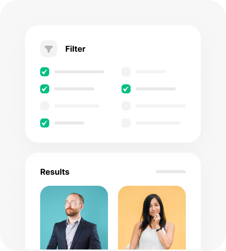

<section class="info">
    <div class="container_min pd_content hidden">
        <div id="demographics">
            <div class="graphics">
                
                
            </div>
            <div class="demographics_content">
                <h5 class="green">Demographics</h5>
                <h2 class="animation_headline">Instantly create your personas</h2>
                <p class="content_info">The sheer scale of the dataset allows us to compile accurate audience profiles by gender, age, location, family, education, occupation and income.</p>
            </div>
        </div>
        <div id="segmentation">
            <div class="segmentation_content">
                <h5 class="blue">Segmentation</h5>
                <h2 class="width_mob animation_headline">Segment the data automatically</h2>
                <p class="content_info">Easily combine multiple filtering options when creating a report, such as user profiles, similarity, job roles, and demographics to create highly personalized audience segments.</p>
            </div>
            <div class="segmentation">
                
                
            </div>
        </div>
    </div>
</section>